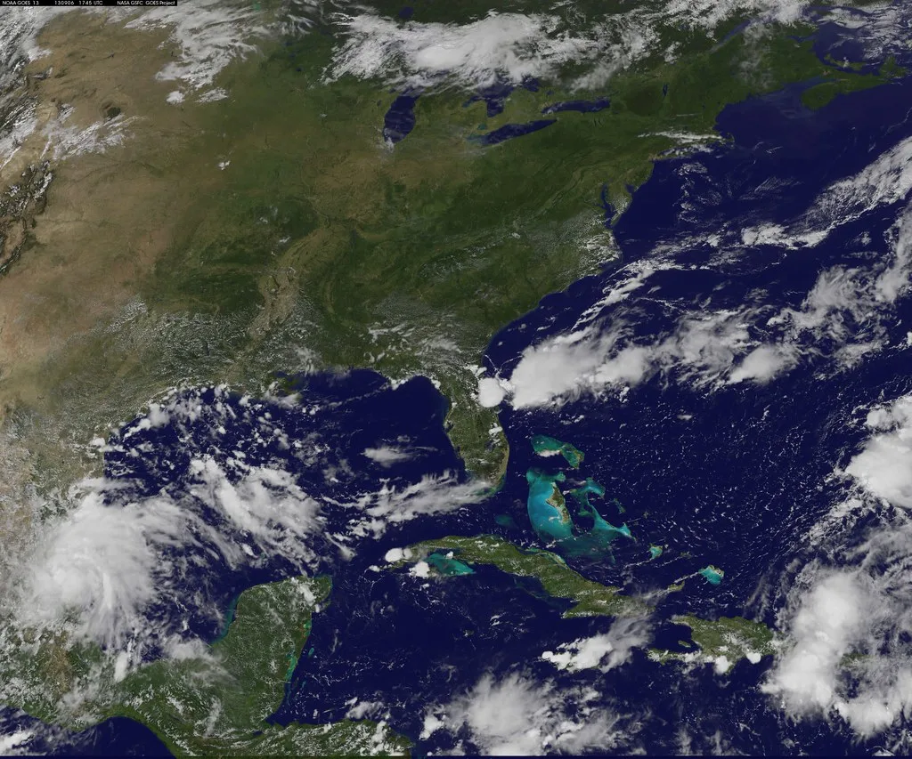
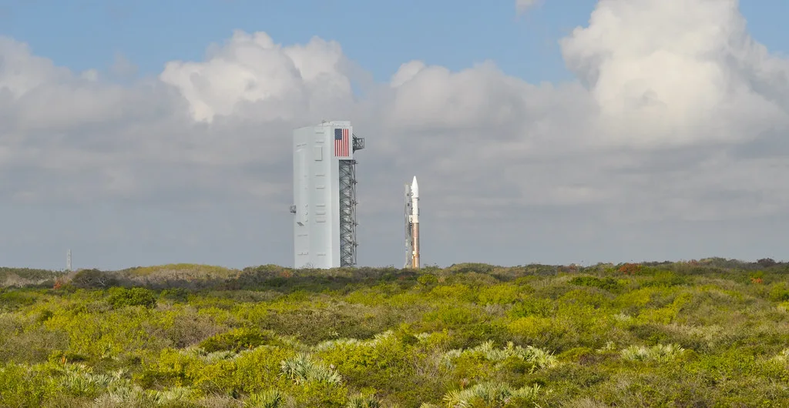

누리호 5차 발사 성공…초소형군집위성 5기 동시 궤도 안착
한국형 발사체 누리호가 지난 7일 전남 고흥 나로우주센터에서 5차 발사에 성공했다. 누리호는 발사 후 초소형군집위성 5기를 포함해 총 15기의 위성을 실어 올렸으며, 고도 약 576킬로미터 상공에서 위성들을 순차적으로 분리하는 임무를 수행했다. 발사체는 이륙 후 지정된 시간대에 2호부터 6호까지 번호가 붙은 초소형군집위성 '네온샛'을 차례로 떼어냈고, 이후 지상국과의 양방향 교신도 모두 성공적으로 이뤄진 것으로 확인됐다.
이번 발사에서 가장 주목할 성과는 5기의 소형 위성을 한 번에 동시 투입하는 데 성공했다는 점이다. 국내에서 다중 위성을 한꺼번에 궤도에 올린 사례 가운데서도 손꼽히는 규모로, 대량의 우주 수송 능력을 실증했다는 의미가 크다. 그동안 누리호는 주로 소수의 위성을 탑재해 발사하는 방식이었는데, 이번에는 탑재 위성 수를 크게 늘리면서도 안정적으로 임무를 완수해 발사체의 신뢰성을 한 단계 끌어올렸다는 평가가 나온다.

누리호는 2021년 1차 발사에서 실패를 겪은 뒤 이후 4차례 연속 성공을 거두며 누적 발사 성공률을 80%까지 끌어올렸다. 특히 이번 5차 발사는 예정된 발사일에 지연 없이 그대로 쏘아 올린 첫 사례로 기록됐다. 발사 일정이 기상 상황이나 기술적 점검 등으로 미뤄지는 경우가 잦았던 과거와 달리, 이번에는 계획한 날짜를 지키면서 발사체 운용의 완성도가 높아졌음을 보여줬다는 해석이 나온다.
이번에 투입된 초소형군집위성은 여러 기가 편대를 이뤄 동시에 지구를 관측하는 임무를 수행한다. 여러 위성이 같은 지역을 짧은 시간 간격으로 반복 관측할 수 있는 만큼, 재난 대응이나 환경 감시 등에서 관측 주기를 크게 줄이는 효과를 기대할 수 있다. 다수의 소형 위성을 저궤도에 군집으로 운용하는 방식은 최근 전 세계적으로 늘어나는 추세이며, 이번 발사는 국내에서도 이런 군집 운용 체계를 실제로 구축하는 첫걸음으로 평가된다.

이번 성공은 국내 우주산업이 민간 상업발사 체제로 전환하는 흐름에도 속도를 더할 것으로 보인다. 그동안 누리호 발사는 국책 연구기관이 주도하는 방식으로 진행돼왔지만, 발사 신뢰성이 쌓이면서 민간 기업이 참여하는 상업 발사 서비스로 영역을 넓히려는 움직임이 이어지고 있다. 다수의 위성을 동시에 실어 나르는 능력을 갖추게 된 만큼, 앞으로 민간 위성 사업자들의 발사 수요를 흡수할 수 있는 기반도 한층 넓어질 전망이다.
관계 기관은 이번 5차 발사의 성공을 토대로 내년 하반기로 예정된 6차 발사를 준비할 계획이다. 6차 발사에서도 이번과 비슷하게 초소형군집위성 5기를 궤도에 올리는 임무가 핵심 과제로 제시됐다. 당국은 이번 성과를 발판으로 발사체의 재사용 기술 개발 등 차세대 과제에도 속도를 낼 방침이며, 국내 우주산업 생태계 전반이 이번 연속 성공을 계기로 한층 탄력을 받을 것으로 기대하고 있다. 아울러 이번 발사로 축적된 다중 위성 분리 기술과 교신 데이터는 향후 발사체 개발 과정에서 중요한 참고 자료로 활용될 전망이다.
이번 성공으로 국내 우주 개발 역량에 대한 대외 신뢰도도 한층 높아질 것으로 보인다. 발사 일정을 지연 없이 지킨 데다 다수 위성의 동시 분리와 교신까지 매끄럽게 마무리하면서, 해외 위성 사업자들의 발사 수요를 끌어오는 데도 긍정적인 신호가 될 것이라는 전망이 나온다.